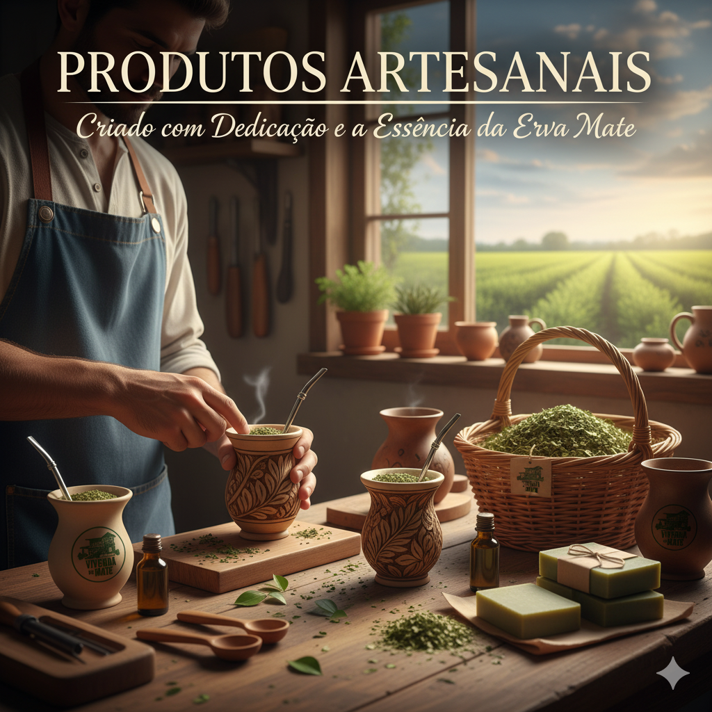

Na vivenda do Mate, acreditamos que a erva-mate é uma fonte infinita de inspiração e bem-estar.
É por isso que nos dedicamos a explorar todas as facetas dessa maravilhosa planta, levando-a além
da cuia e introduzindo-a em uma infinidade de preparos deliciosos.

Mate Além da Cuia
Explore receitas criativas e surpreendentes com erva-mate
Chimarrão Tradicional
O chimarrão é a essência do nosso convívio — quente, encorpado e compartilhado.
É mais do que uma bebida; é um ritual de conexão, tradição e bem-estar que atravessa gerações.
Ingredientes
Erva-mate Vivenda do Mate (preencher 1/3 da cuia)
Água quente (70-80°C)
Água fria ou morna (para hidratação inicial)
Bomba de chimarrão
Modo de Preparo
Acomode a erva-mate em um dos lados da cuia, preenchendo cerca de 1/3 do recipiente
Com a cuia inclinada, adicione água fria (para um chimarrão suave) ou água morna/quente (para um sabor mais intenso)
Aguarde alguns segundos até que a erva-mate absorva completamente a água — este passo é essencial para o melhor sabor
Posicione a bomba no espaço livre da cuia
Complete com água quente e aproveite!
Dica: A temperatura ideal da água é entre 70-80°C. Água muito quente pode deixar o chimarrão amargo.
Vídeo Tutorial
Tereré Refrescante
Perfeito para os dias quentes, o tereré é a versão gelada da erva-mate.
Refrescante, energizante e versátil — pode ser preparado com água ou sucos naturais.
Ingredientes
Erva-mate Vivenda do Mate (preencher 1/3 da guampa)
Água gelada ou suco natural (limão, laranja, abacaxi)
Gelo (opcional)
Bomba de chimarrão
Modo de Preparo
Acomode a erva-mate em um dos lados da guampa ou copo, preenchendo 1/3
Com o recipiente inclinado, adicione água fria e aguarde a erva absorver
Posicione a bomba no espaço livre
Complete com água gelada, suco natural ou adicione gelo a gosto
Está pronto para refrescar o seu dia!
Variação: Experimente adicionar hortelã, gengibre ou frutas cítricas para um toque especial!
Chá de Erva-Mate
Uma opção reconfortante e simples para qualquer hora do dia.
O chá de erva-mate oferece todos os benefícios da planta de forma prática e acolhedora.
Ingredientes
1 colher (sopa) de erva-mate Vivenda do Mate
200ml de água quente
Mel ou açúcar a gosto (opcional)
Limão ou hortelã (opcional)
Modo de Preparo
Coloque 1 colher de sopa de erva-mate em uma xícara ou infusor
Adicione água quente (não fervente) sobre a erva-mate
Aguarde de 3 a 5 minutos para a infusão
Coe se necessário e adoce a gosto
Sirva quente ou deixe esfriar para um chá gelado
Benefício: O chá de erva-mate é rico em antioxidantes, vitaminas e proporciona energia natural!
RECEBA NOVIDADES
Cadastre-se e fique por dentro das novidades e benefícios exclusivos da Vivenda do Mate!